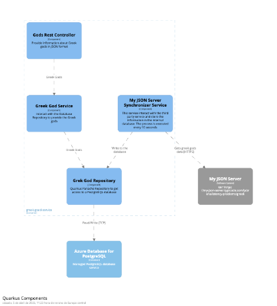

101 Cursor AI
Learning to use for Java Enterprise projects
“There is no favorable wind for the sailor who doesn't know where to go”
-Seneca
“If you don't know how to ask the right question, you won't discover anything.”
- W. Edwards Deming
“You can't fake quality any more than you can fake good food.”
- William S. Burroughs
“People have a right to joy in their work.”
- W. Edwards Deming
Who I am
|
|
Juan Antonio Breña Moral Technical Product Owner for Engineering Shared Platform @ Atradius CIO
Twitter | Github | LinkedIn |
|
Quotes: "Lead me, follow me, or get out of my way." "Pressure makes diamonds." - George S. Patton Jr. |
|
 Source: Leavitt's Alignment Model (1965) >> People, Process and Technology Framework
Source: Leavitt's Alignment Model (1965) >> People, Process and Technology Framework
Evaluating a Programming Language Ecosystem
|
Technical Foundation
|
Developer Experience
|
Evaluating a Programming Language Ecosystem
|
Ecosystem Health
|
Specialty Considerations
|

Agenda
- Who I am
- Value proposition
- Reviewing the IDE
- General demo
- References
- Q&A
Poll
Can you raise your hand ✋, if you have tried Cursor AI?

Poll
Why do you think that tools like Cursor AI is in everyone's mouth?
Value proposition
ThoughtWorks Radar 2025Q1 // Tools
 Source: https://www.thoughtworks.com/radar/tools/summary/cursor
Source: https://www.thoughtworks.com/radar/tools/summary/cursor
Value proposition

Value proposition
 Source: https://www.strategyzer.com/library/the-value-proposition-canvas
Source: https://www.strategyzer.com/library/the-value-proposition-canvas
Value proposition
The Circle (Right side) - Customer Profile:
- Customer Jobs: What customers are trying to get done
- Gains: The benefits/outcomes customers want to achieve
- Pains: The negative experiences, risks, and obstacles customers face
Value proposition
The Square (Left side) - Value Proposition Map:
- Products and Services: The items and services you offer
- Gain Creators: How your offering creates customer gains
- Pain Relievers: How your offering alleviates customer pains
Value proposition
- Customer Jobs: What customers are trying to get done
- Writing and maintaining code
- Debugging and troubleshooting
- Code review and documentation
- Learning new technologies
Value proposition
- Customer Jobs: What customers are trying to get done
- Critical Analysis:
- Not all development tasks benefit from AI
- Some tasks require human creativity
- Complex architectural decisions need human insight
- Critical Analysis:
Value proposition
- Gains: The benefits/outcomes customers want to achieve (Developer)
- Faster development cycles
- Improved code consistency
- Better documentation practices
- Learning from AI suggestions
- Better tests
Value proposition
 WIP
WIP
Value proposition
- Gains: The benefits/outcomes customers want to achieve (Developer)
- Critical Concerns:
- May create false sense of productivity
- Could lead to over-reliance on AI
- Team dynamics might be affected
- Critical Concerns:
Value proposition
- Pains: The negative experiences, risks, and obstacles customers face
- Time spent on repetitive coding tasks
- Documentation burden
- Code maintenance challenges
- Learning curve for new technologies
Value proposition
- Pains: The negative experiences, risks, and obstacles customers face
- Critical Concerns:
- AI might not understand legacy code well
- Could introduce new types of errors
- Security and privacy risks
- Critical Concerns:
Value proposition
- Products and Services: The items and services you offer
- Canvas AI as an AI-powered development tool
- Integrated development environment with AI capabilities
- Code completion and generation features
- Code analysis and refactoring capabilities
Value proposition
- Gain Creators: How your offering creates customer gains
- Increased developer productivity
- Faster code generation and completion
- Reduced time spent on repetitive tasks
- Better code quality through AI suggestions
- Enhanced documentation capabilities
Value proposition
- Gain Creators: How your offering creates customer gains
- Critical Concerns:
- May create dependency on AI suggestions
- Could lead to less deep understanding of code
- Quality of suggestions varies by context
- Critical Concerns:
Value proposition
- Pain Relievers: How your offering alleviates customer pains
- Reduces manual coding effort
- Minimizes time spent on boilerplate code
- Helps catch potential bugs early
- Assists with code documentation
Value proposition
- Pain Relievers: How your offering alleviates customer pains
- Critical Concerns:
- May introduce incorrect or insecure code
- Could suggest outdated patterns
- Privacy concerns with code sharing
- Cognitive load periodical review
- Critical Concerns:
Cognitive load
All lines of code generated by any LLM must to be mastered by the team.
 Source: https://www.barefootteflteacher.com/p/what-is-cognitive-load-theory
Source: https://www.barefootteflteacher.com/p/what-is-cognitive-load-theory
Reviewing the IDE
The whole talk was prepared with the folowing Cursor version:

Reviewing the IDE
- Security features
- Enterprise features
- Context features
- Developer features
Reviewing the IDE
- Security features
- Privacy mode
- Trust
Privacy mode
 Source: https://www.cursor.com/privacy
Source: https://www.cursor.com/privacy
Trust
Cursor operates a continuously monitored and 3rd-party audited security program.

SOC 2 is a compliance framework used to evaluate and validate an organizations information security practices.
Reviewing the IDE
- Enterprise features
- Business account
- Team management
- Budget management
- Team metrics
Business account

- Enforce privacy mode org-wide
- SAML/OIDC SSO
Team management

Team management

Budget management
Fix the monthly budget for the team:

Team metrics

Reviewing the IDE
- Context features
- Settings
- Modes (Agent, Ask, Manual)
- Cursor rules
- Symbols
- MCP
Settings / Codebase Indexing

Review the usage of .cursorignore file to avoid indexing sensitive data.
Source: https://www.cursor.com/security#codebase-indexingSettings / Docs

Learn how to use, add, and manage custom documentation as context in Cursor using @Docs
Source: https://docs.cursor.com/context/@-symbols/@-docs#docs
Modes

Ask Mode
- Ask questions about specific code sections
- Get explanations of complex functions
- Find code patterns and examples
- Discover and understand your codebase
Agent Mode
- Make codebase-wide changes and refactoring
- Implement new features from requirements
- Debug complex issues across multiple files
- Generate tests and documentation
- Maintain consistency across your entire project
Cursor rules
Using rules in Cursor you can control the behavior of the underlying model. You can think of it as instructions and/or a system prompt for LLMs.
Cursor rules

Symbols
 Source: https://docs.cursor.com/context/@-symbols/overview
Source: https://docs.cursor.com/context/@-symbols/overview
MCP

Model Context Protocol (MCP) is an open protocol that standardizes how applications provide context to LLMs.
Source: https://modelcontextprotocol.io/introductionMCP

Think of MCP as a plugin system for Cursor
Source: https://docs.cursor.com/context/model-context-protocolMCP

MCP
MCP

Source: https://mcp-java.github.io/
MCP

- Verify that you are using signed MCP servers
- Verify the sources of your MCP servers
Reviewing the IDE
- Developer features
- Tab model
- Review changes
Tab model
Review changes
General demo
Scenario

 Source: https://datarob.com/essentials-software-development-life-cycle/
Source: https://developers.redhat.com/blog/2016/12/09/spring-cloud-for-microservices-compared-to-kubernetes
Source: https://datarob.com/essentials-software-development-life-cycle/
Source: https://developers.redhat.com/blog/2016/12/09/spring-cloud-for-microservices-compared-to-kubernetes
Analysis & Design

docker run -it --rm -p 9000:8080 -v \
$(pwd)/structurizr:/usr/local/structurizr \
structurizr/onpremises:2024.12.07
open http://localhost:9000
Source: https://structurizr.com/
Analysis & Design
Requirements:
- Gherkin scenarios
- Open API Specification for the new service
- Open API Specification for the third party service
- Database schema design
- C4 Diagram
- UML Sequence Diagram about the system
Analysis & Design
Analysis & Design

Implementation
Prompt: Use the @20250320-1.md as Prompt and analyze implement & test the following images to understand the required development.

Implementation

In the prompts, reduce the ambiguity to increase the code generation.
Implementation

In the prompts, reduce the ambiguity to increase the code generation.
References
Crossing the Chasm
 Source: https://www.amazon.com/Crossing-Chasm-3rd-Disruptive-Mainstream/dp/0062292986
Source: https://www.amazon.com/Crossing-Chasm-3rd-Disruptive-Mainstream/dp/0062292986
Effective Java
 Source: https://www.oreilly.com/library/view/effective-java-3rd/9780134686097/
Source: https://www.oreilly.com/library/view/effective-java-3rd/9780134686097/
Java Concurrency in Practice

Source: https://jcip.net/
Concurrenct programming in Java

Source: https://www.oreilly.com/library/view/concurrent-programming-in/0201310090/
Unit Testing
 Source: https://pragprog.com/titles/utj2/pragmatic-unit-testing-in-java-8-with-junit/
Source: https://pragprog.com/titles/utj2/pragmatic-unit-testing-in-java-8-with-junit/
Extreme Programming Explained

Source: https://kentbeck.com/
New proposals...
Quarkus in action

Source: https://www.manning.com/books/quarkus-in-action
🙏 🙏 🙏
Thanks